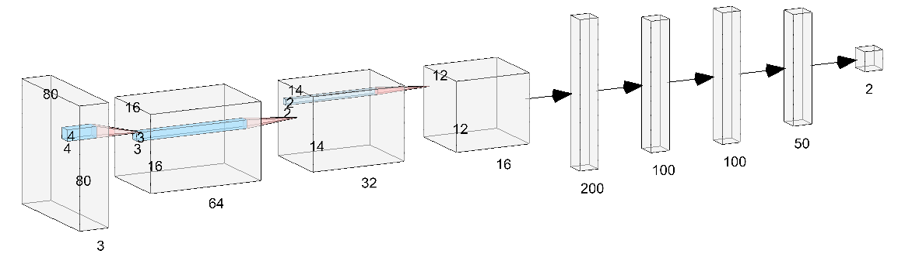

Docker環境におけるkerasを用いたモデル構築
tensorflow.kerasが使えるdocker環境を作り、データセットを使って船舶識別を行うモデル作成まで行います。
ご自身でモデル構築ができる人は飛ばしてください。
現状の環境
ubuntu: 18.04
Driver Version: 515.105.01
CUDA Version: 11.7
$ nvidia-smi
+-----------------------------------------------------------------------------+
| NVIDIA-SMI 515.105.01 Driver Version: 515.105.01 CUDA Version: 11.7 |
|-------------------------------+----------------------+----------------------+
| GPU Name Persistence-M| Bus-Id Disp.A | Volatile Uncorr. ECC |
| Fan Temp Perf Pwr:Usage/Cap| Memory-Usage | GPU-Util Compute M. |
| | | MIG M. |
|===============================+======================+======================|
| 0 NVIDIA TITAN V On | 00000000:06:00.0 Off | N/A |
| 32% 47C P8 28W / 250W | 25MiB / 12288MiB | 0% Default |
| | | N/A |
+-------------------------------+----------------------+----------------------+
| 1 NVIDIA TITAN V On | 00000000:0A:00.0 Off | N/A |
| 28% 39C P8 25W / 250W | 5MiB / 12288MiB | 0% Default |
| | | N/A |
+-------------------------------+----------------------+----------------------+
+-----------------------------------------------------------------------------+
| Processes: |
| GPU GI CI PID Type Process name GPU Memory |
| ID ID Usage |
|=============================================================================|
| 0 N/A N/A 2177 G /usr/lib/xorg/Xorg 9MiB |
| 0 N/A N/A 2500 G /usr/bin/gnome-shell 14MiB |
| 1 N/A N/A 2177 G /usr/lib/xorg/Xorg 4MiB |
+-----------------------------------------------------------------------------+
出来上がる環境
tensorflow 2.6.0
python3.6.9
nvidia-container-toolkitの導入
すでに導入されている場合は飛ばして良い。
$ curl -s -L https://nvidia.github.io/nvidia-docker/gpgkey | sudo apt-key add -
$ curl -s -L https://nvidia.github.io/nvidia-docker/$(. /etc/os-release;echo $ID$VERSION_ID)/nvidia-docker.list | sudo tee /etc/apt/sources.list.d/nvidia-docker.list
$ sudo apt update
$ sudo apt -y install nvidia-container-toolkit
以下のコマンドが実行出来れば完了
$ nvidia-container-cli info
NVRM version: 515.105.01
CUDA version: 11.7
Device Index: 0
Device Minor: 1
Model: NVIDIA TITAN V
Brand: TITAN
GPU UUID: GPU-8a3843c1-8daf-fa8c-a6c1-12a24c75a6b9
Bus Location: 00000000:06:00.0
Architecture: 7.0
Device Index: 1
Device Minor: 0
Model: NVIDIA TITAN V
Brand: TITAN
GPU UUID: GPU-8480bc57-d009-1175-2d29-b8ad2b4523f6
Bus Location: 00000000:0a:00.0
Architecture: 7.0
一度dockerを再起動しておく
$ sudo systemctl restart docker
コンテナを立ち上げてエラーが出なければ問題なし
$ docker run --rm --gpus all nvidia/cuda:11.0.3-base nvidia-smi
+-----------------------------------------------------------------------------+
| NVIDIA-SMI 515.105.01 Driver Version: 515.105.01 CUDA Version: 11.7 |
|-------------------------------+----------------------+----------------------+
| GPU Name Persistence-M| Bus-Id Disp.A | Volatile Uncorr. ECC |
| Fan Temp Perf Pwr:Usage/Cap| Memory-Usage | GPU-Util Compute M. |
| | | MIG M. |
|===============================+======================+======================|
| 0 NVIDIA TITAN V On | 00000000:06:00.0 Off | N/A |
| 32% 47C P8 28W / 250W | 25MiB / 12288MiB | 0% Default |
| | | N/A |
+-------------------------------+----------------------+----------------------+
| 1 NVIDIA TITAN V On | 00000000:0A:00.0 Off | N/A |
| 28% 39C P8 25W / 250W | 5MiB / 12288MiB | 0% Default |
| | | N/A |
+-------------------------------+----------------------+----------------------+
+-----------------------------------------------------------------------------+
| Processes: |
| GPU GI CI PID Type Process name GPU Memory |
| ID ID Usage |
|=============================================================================|
+-----------------------------------------------------------------------------+
エラーが出るようであれば、自身のcudaのバージョンを確認してみる
docker 環境の構築
./
├── workspace
│ ├──
│ │ ├── x_test.npy
│ │ └── y_test.npy
│ ├──
│ └──
├── Docker
└── docker-compose.yml
docker-compose.yml
version: "3.2" services: tensorflow_keras: build: context: . dockerfile: Dockerfile image: "tensorflwo-keras26" container_name: "your_container_name" volumes: - ./workspace:/workspace ports: - 8888:8888 deploy: resources: reservations: devices: - driver: nvidia count: 1 capabilities: [gpu] environment: - NVIDIA_VISIBLE_DEVICES=all tty: true
Docker
FROM tensorflow/tensorflow:2.6.0-gpu-jupyter SHELL ["/bin/bash", "-c"]
データセットの取得
今回はkaggleで利用されているデータセットを用いて学習を行う。
https://www.kaggle.com/datasets/rhammell/ships-in-satellite-imager
このデータセットは80 $\times$ 80ピクセルの4000枚のRGB画像が含まれており、それらは船か船以外かのラベルを持っている。 詳しくはコンテストページを参照していただきたい。
データセットをダウンロードをダウンロードすると/shipsnet/shipsnetに画像データが存在しており、./shipsnet.jsonに数値データが入っているので、使いやすいようにnpyデータとラベルのセットを作成する。
make_dataset.py
import pandas as pd import json import numpy as np from keras.utils import to_categorical from sklearn.model_selection import train_test_split with open('shipsnet.json') as data_file: dataset = json.load(data_file) shipsnet= pd.DataFrame(dataset) shipsnet.head() shipsnet = shipsnet[["data", "labels"]] x = np.array(dataset['data']).astype('uint8') y = np.array(dataset['labels']).astype('uint8') x_reshaped = x.reshape([-1, 3, 80, 80]).transpose([0,2,3,1]) y_reshaped = to_categorical(y, num_classes=2) x_reshaped = x_reshaped / 255 x_train, x_test, y_train, y_test = train_test_split(x_reshaped, y_reshaped, test_size = 0.20, random_state = 42) #学習データとテストデータを8：2で分割 x_train, x_val, y_train, y_val = train_test_split(x_train, y_train, test_size = 0.25, random_state = 42) #学習データのうちの25％を検証データとして利用 np.save("out/x_train",x_train) np.save("out/y_train",y_train) np.save("out/x_val",x_val) np.save("out/y_val",y_val) np.save("out/y_test",y_test) np.save("out/x_test",x_test)
実行すると./outに学習データ、検証データ、テストデータが生成されるのでworkspaceに展開する。 今後はこれらのデータを使って学習と推論を進める。
モデルの構築
今回のモデルでは単純な3層CNNを作成する。外観は以下のようになる。 